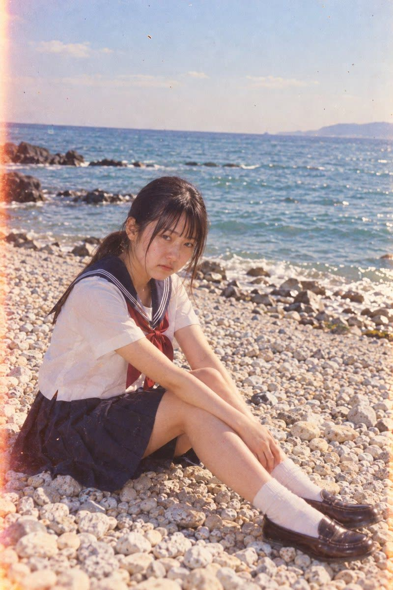

Retro Film Portrait of Girl in Sailor Uniform
GRN-004Grain / FilterGPT Image 2by 拓斗October 17

Generates a nostalgic, vintage-style photograph of a young woman in a Japanese school uniform sitting on a rocky beach.
Prompt
A vertical medium-full shot of a young Asian woman sitting on a rocky pebble beach, looking directly at the camera with a calm, slightly melancholic expression. She has dark hair tied back in a low ponytail with loose bangs framing her face. She is wearing a traditional Japanese sailor school uniform (seifuku) consisting of a white short-sleeved blouse with a navy blue collar featuring white stripes and a red neckerchief, paired with a dark navy pleated skirt. On her feet, she wears white ankle socks and brown leather loafers. Her pose is relaxed, sitting with her legs extended forward and slightly bent, hands resting near her lap. The background features a bright blue sea with gentle waves crashing against the shore, scattered rocks, and a clear sky with faint clouds. The image has a strong retro film aesthetic, characterized by warm tones, visible grain, soft focus, and light leaks or color shifts along the edges typical of vintage instant film photography.
Tags: 9:16 vertical